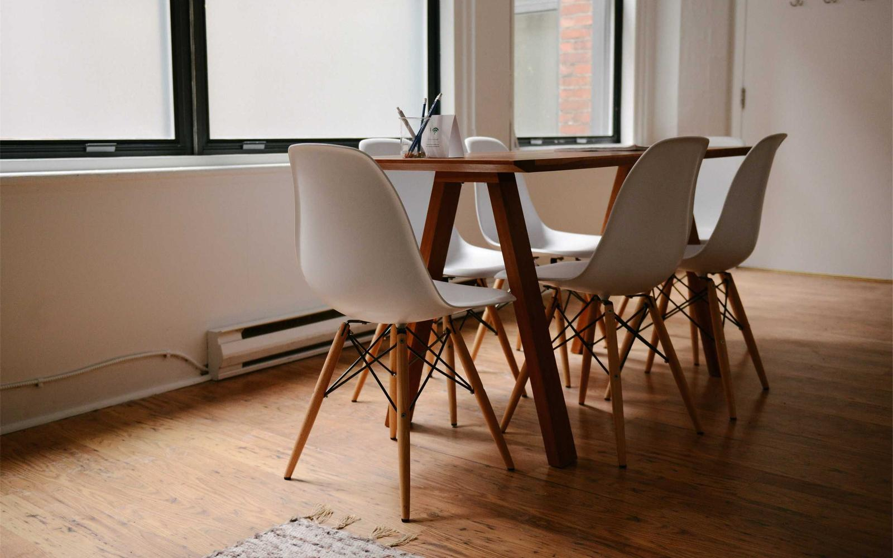
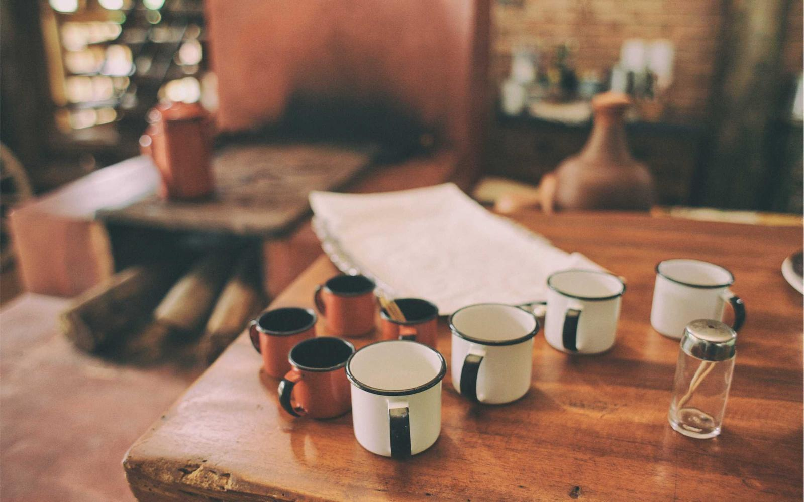
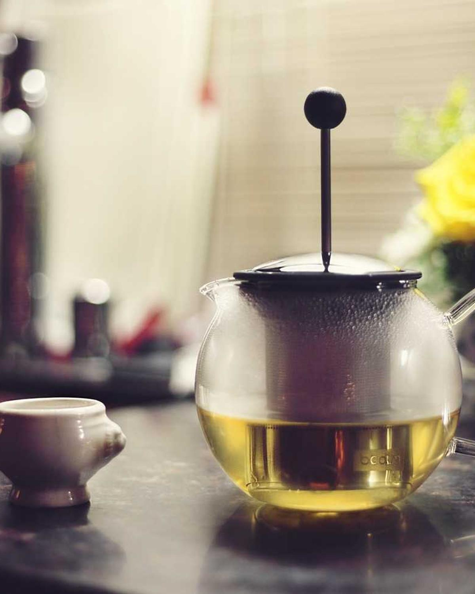
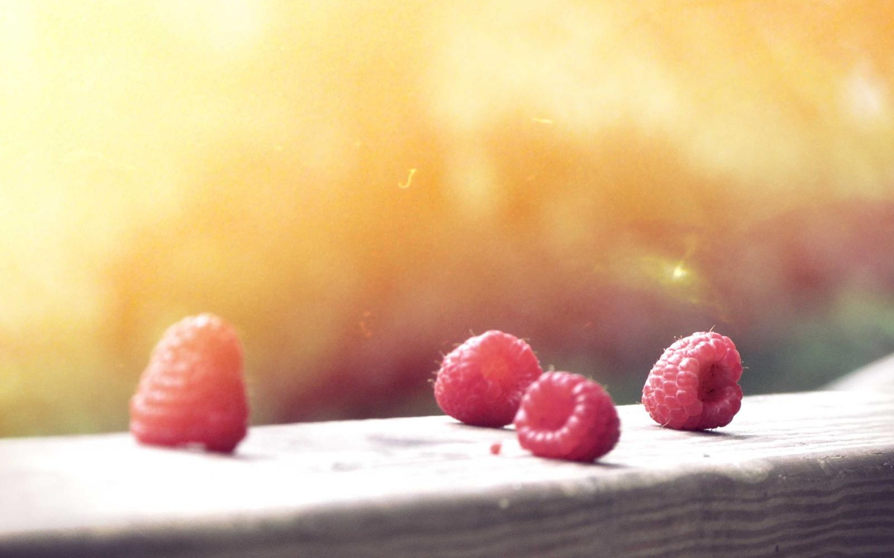
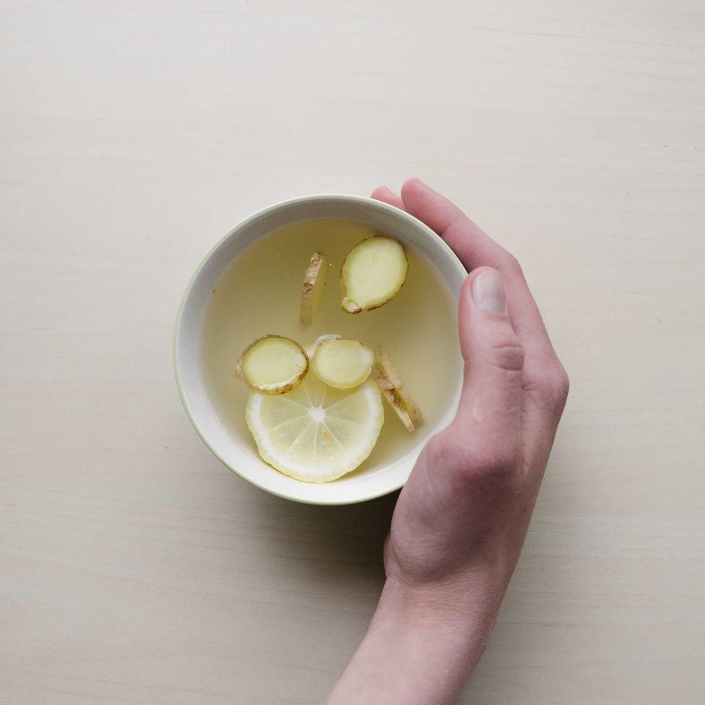
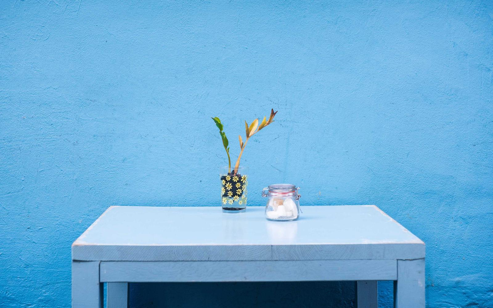
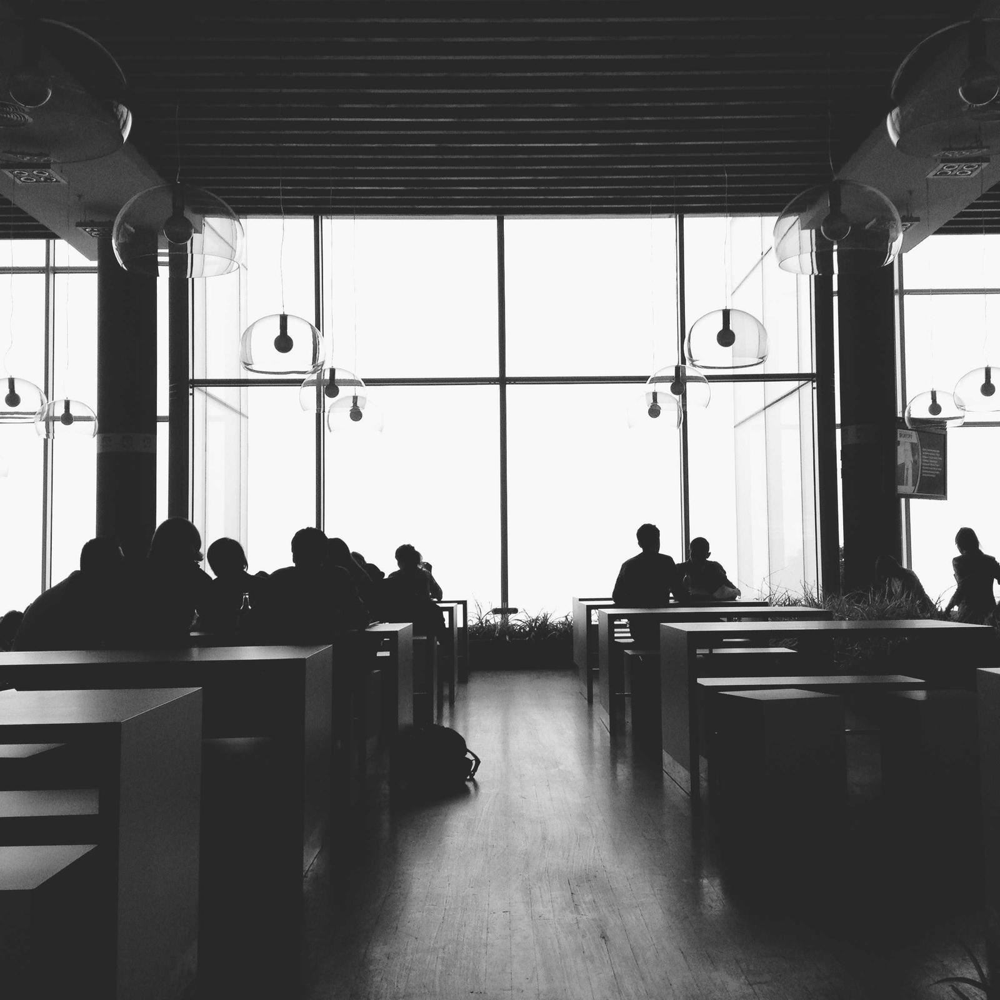

Odun
Odun ateşinde pişen mahalle lokantası. Her gün öğleden gece yarısına yakın açığız.
Pazartesi hariç her gün 12:00–23:00
Masa ayırtLokanta hakkında
Odun mahallenin lokantası. Ocak sabah yanar, yemekler sipariş gelince ateşte pişer.
Menüde ocağın değişmeyenleri var, bir de her gün değişen iki yemek.
Masalar rezervasyonsuz da dolar. Kalabalık günlerde ayırtmak işinizi kolaylaştırır.
Uzun masalarımız aileler ve gruplar için.

Ocağın başı



Sofra



Sorular
- Rezervasyon şart mı?
- Şart değil. Hafta sonu akşamları masa bulmak zor olabilir, bu günler için ayırtmanızı öneririz.
- Kaç kişilik grup alıyorsunuz?
- Uzun masalarımızda on iki kişiye kadar birlikte oturabilirsiniz. Daha büyük gruplar için bize yazın.
- Etsiz seçenek var mı?
- Mezeler, salata ve közlenmiş sebzeler etsizdir. Günün yemeklerini sorabilirsiniz.
- Çocuk sandalyesi var mı?
- Var. Masayı ayırtırken belirtirseniz hazır bekler.